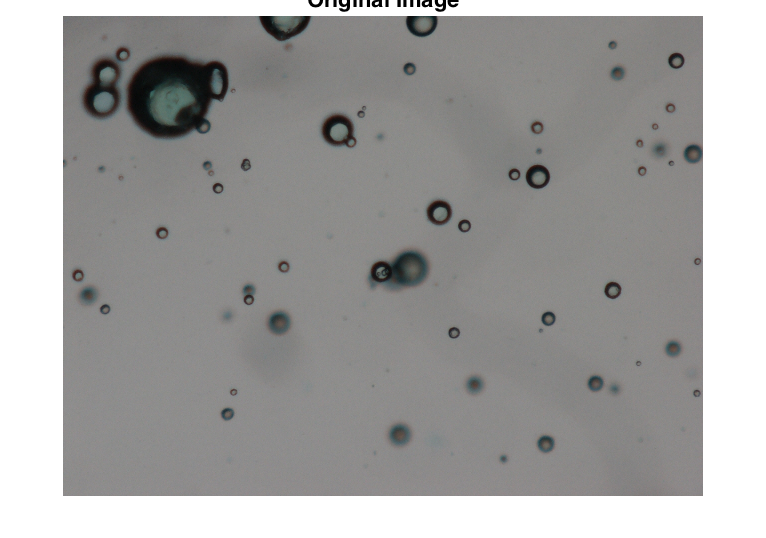
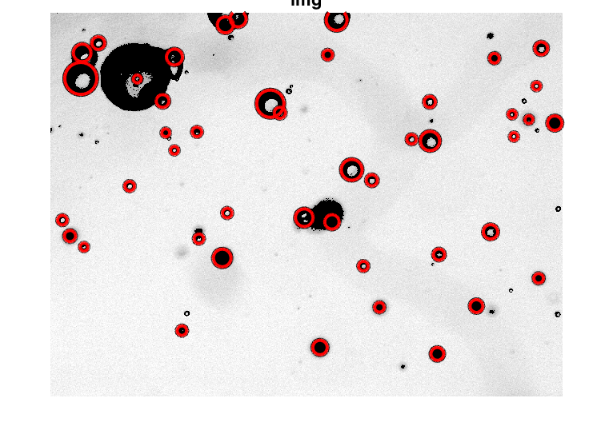
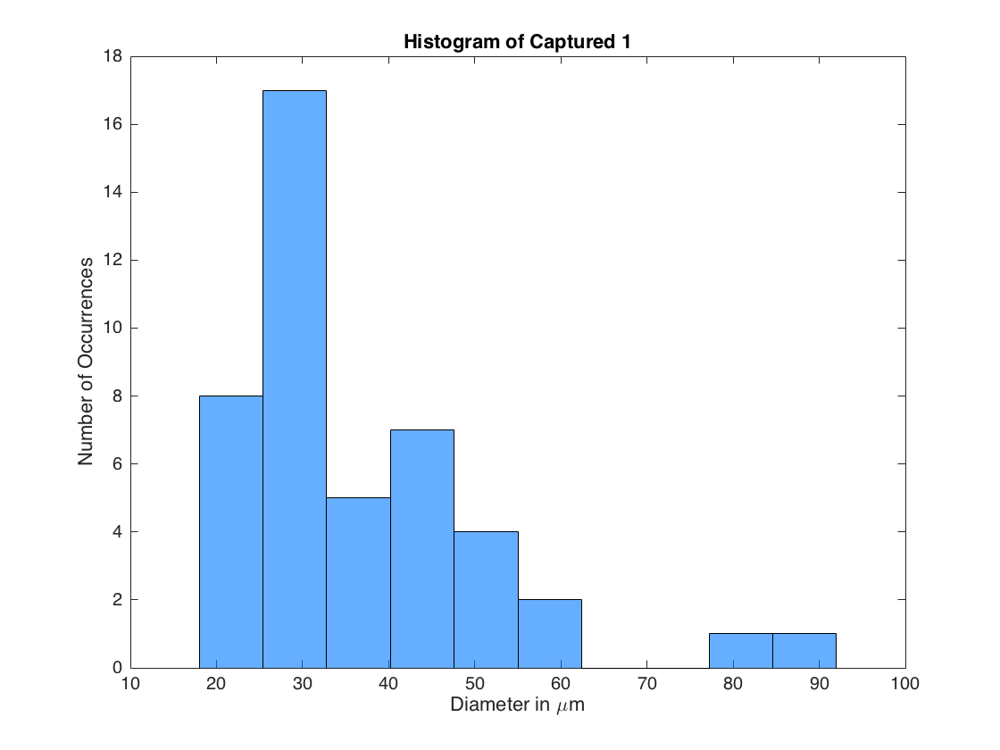
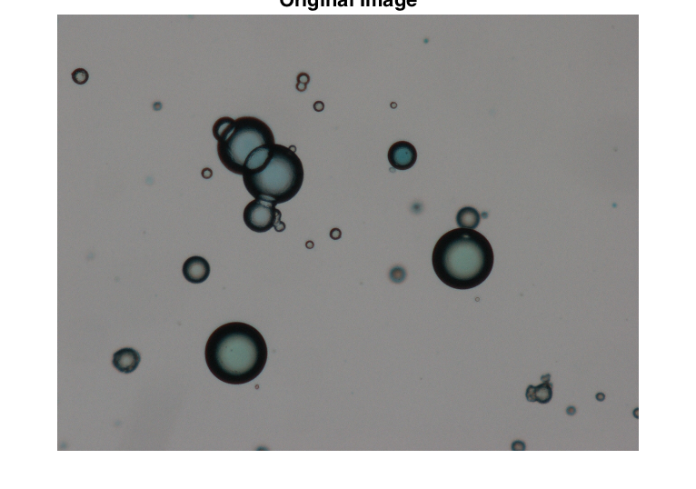
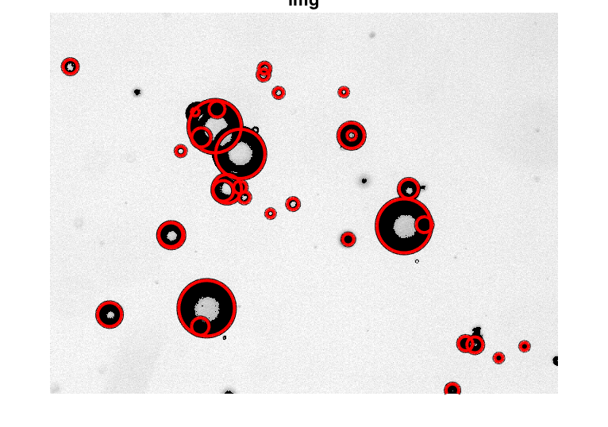
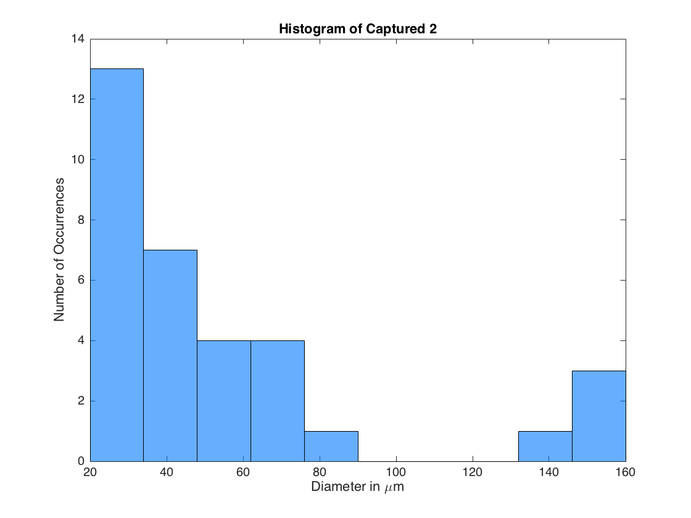
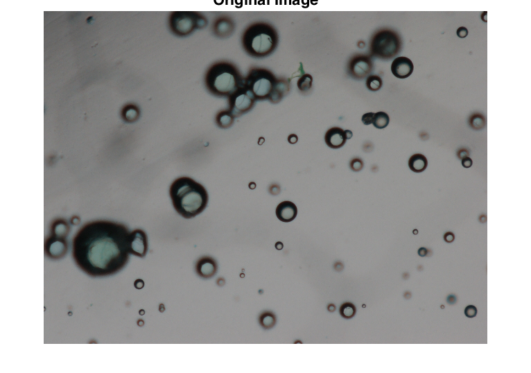
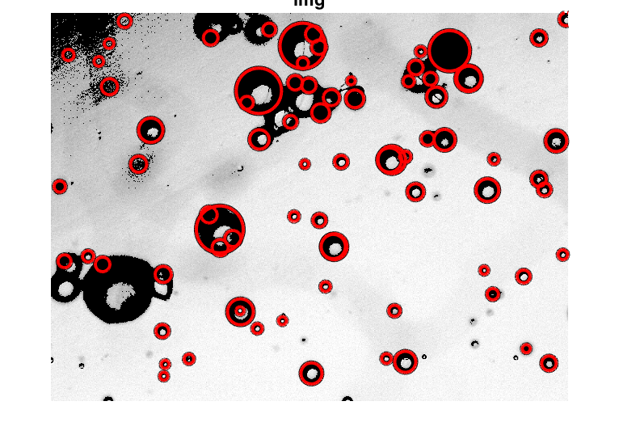
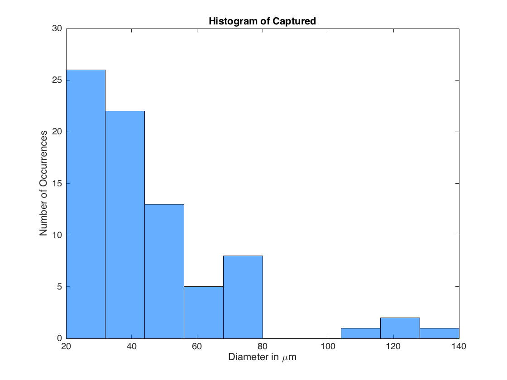
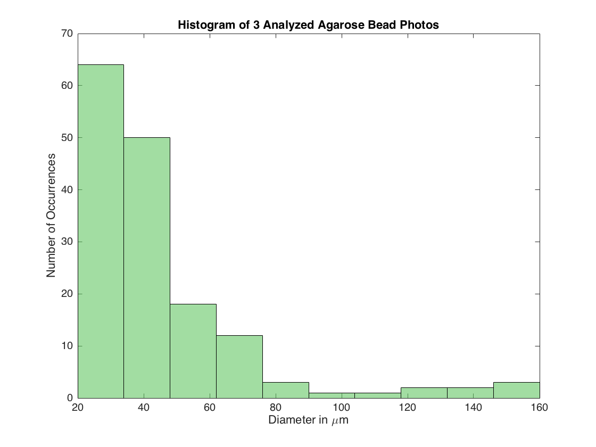

clc, clear all, close all % Boilerplate % Careful ignore the circle algorithm warnings :) warning('off','all') warning % Manually Measure Scale % 1 439 127.015 87.450 139.792 -4.709 438.444 OneMM = 438.444; % pixels OneMicro = OneMM/1000; NetDiameters = []; %%%%%%%%%%%%%%%%%%%%%%%%%% % Pick Photo files to analyze TempDir = pwd; % Go out and back into directory to make it easier to find the photos to analyze cd .. [PhotoNames, PhotoPath] = uigetfile('.jpg', 'Select Image To Measure', 'MultiSelect', 'on'); cd(TempDir) % Determine the number of cells selected CheckCell = iscell(PhotoNames); if CheckCell == 0 CountLimit = 1; else CountLimit = max(size(PhotoNames)); end %%%%%%%%%%%%%%%%%%%%%%%%%% % Loop Through Files for PhotoCount = 1:CountLimit % Parse path if CheckCell == 0 filename = strcat(PhotoPath, PhotoNames); else filename = strcat(PhotoPath, PhotoNames{PhotoCount}); end [ParentPath, PhotoName, ext] = fileparts(filename); % Path = strcat(ParentPath, '/Output'); %%%%%%%%%%%%%%%%%%%%%%%%%% % Import Image img = imread(filename); figure imshow(img) title('Original Image') % % Good spot for image analysis % figure % imshow(img(:, :, 1)) % title('Red') %%%%%%%%%%%%%%%%%%%%%%%%%% % Improve Image Quality prior to analysis img = img(:, :, 3); % only show blue img = imsharpen((img)); % sharpen img = imadjust(img); % increase contrast of grayscale image [~, img] = createMask(img); % use manually calibrated colorThresholder mask figure imshow(img) title('img') disp(sprintf('Analyzing Photo: "%s"', PhotoName)) %%%%%%%%%%%%%%%%%%%%%%%%%% % Alternate Notes % d = imdistline; % delete(d); % [SmallCenters, SmallRadii] = imfindcircles(img,[3 15],'ObjectPolarity','dark'); % length(SmallCenters) % h = viscircles(SmallCenters, SmallRadii); % [MediumCenters, MediumRadii] = imfindcircles(img,[16 48],'ObjectPolarity','dark', 'Sensitivity',0.9); % length(MediumCenters) % h = viscircles(MediumCenters, MediumRadii); % [LargeCenters, LargeRadii] = imfindcircles(img,[49 120],'ObjectPolarity','dark', 'Sensitivity',0.9); % length(LargeCenters) % h = viscircles(LargeCenters, LargeRadii); %%%%%%%%%%%%%%%%%%%%%%%%%% %%%%%%%%%%%%%%%%%%%%%%%%%% % Identify Circles in Image % MATLAB Guide: http://www.mathworks.com/help/images/examples/detect-and-measure-circular-objects-in-an-image.html % Init Variables PlotCenters = []; PlotRadii = []; Search = []; Loops = 5; CountCircles = zeros(Loops, 1); MinR = 5; for ii = 1:Loops % Find Circles MaxR = floor(MinR*3); [Centers, Radii] = imfindcircles(img,[MinR MaxR],'ObjectPolarity','dark', 'Sensitivity',0.9, 'Method','twostage'); % Store Data CountCircles(ii) = length(Radii); PlotCenters = [PlotCenters; Centers]; PlotRadii = [PlotRadii; Radii]; % Update Counters Search = [Search; MinR, MaxR]; MinR = MaxR+1; Radii = []; end % Output some cool data Headers = {'MinRadius';'MaxRadius';'NumberOfCircles'}; T = table(Search(:,1), Search(:,2), CountCircles, 'VariableNames',Headers) % disp(sprintf('Analyzing %s and found %d circles in this distribution:', PhotoName, sum(CountCircles))) %%%%%%%%%%%%%%%%%%%%%%%%%% % Plot Histogram of real world results h = viscircles(PlotCenters, PlotRadii); ConvertedDiameter = PlotRadii.*2./OneMicro; figure histogram(ConvertedDiameter, 10, 'FaceColor', [0, 120, 256]./256) % dark blue % 'FaceColor', [173, 216, 230]./256) % light blue title(sprintf('Histogram of %s', PhotoName)) xlabel('Diameter in \mum') ylabel('Number of Occurrences') %%%%%%%%%%%%%%%%%%%%%%%%%% % Store Diameter values for meta-analysis NetDiameters = [NetDiameters; ConvertedDiameter]; %%%%%%%%%%%%%%%%%%%%%%%%%% % Remove redundant circles as need...but proved not needed :) % Also look into: http://www.mathworks.com/matlabcentral/answers/19042-finding-duplicate-values-per-column % PlotCenters = [2 4 5 6 4] % % prellocating memory % Rep = zeros(size(PlotCenters)); % count = 0; % for i = 1 : size(PlotCenters,2) % for j = 1 : size(PlotCenters,2) % if PlotCenters(1,i) == PlotCenters(1,j) % count = count +1; % end % end % Rep (1,i) = count; % vector that store the number of repetitions of each element of A. % % if 0 no repetitions if ~= from 0 it the number is repeated that number of times % end %%%%%%%%%%%%%%%%%%%%%%%%%% end %%%%%%%%%%%%%%%%%%%%%%%%%% % Plot Histogram of real world results figure histogram(NetDiameters, 10, 'FaceColor', [100, 200, 100]./256) % green title(sprintf('Histogram of %d Analyzed Agarose Bead Photos', CountLimit)) xlabel('Diameter in \mum') ylabel('Number of Occurrences')
All warnings have the state 'off'.
Analyzing Photo: "Captured 1"
T =
MinRadius MaxRadius NumberOfCircles
_________ _________ _______________
5 15 43
16 48 2
49 147 0
148 444 0
445 1335 0
Analyzing Photo: "Captured 2"
T =
MinRadius MaxRadius NumberOfCircles
_________ _________ _______________
5 15 26
16 48 7
49 147 0
148 444 0
445 1335 0
Analyzing Photo: "Captured"
T =
MinRadius MaxRadius NumberOfCircles
_________ _________ _______________
5 15 70
16 48 8
49 147 0
148 444 0
445 1335 0
         